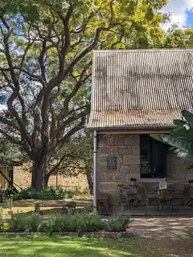
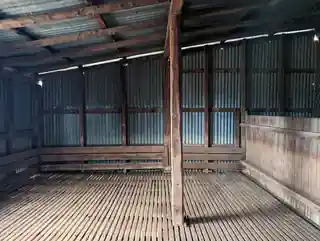

Heritage consultancy · Queensland & Northern NSW
Understanding place.
Guiding change.
We provide considered heritage advice for places in transition — helping clients understand significance, navigate approvals and achieve thoughtful development outcomes.
Our approach
Heritage advice grounded in place.
Orton Heritage works with owners, architects, planners and project teams to balance heritage values with the practical needs of contemporary use and development.
We combine architectural understanding, historical research and clear planning advice to make heritage requirements easier to navigate — from early design thinking through to approvals, documentation and conservation works.


What we do
Conservation and change are not opposites.
Good heritage outcomes come from understanding what matters, why it matters, and where change can occur without diminishing significance. Our role is to make that understanding useful — for design teams, clients and decision-makers.
About Orton Heritage

Start a conversation